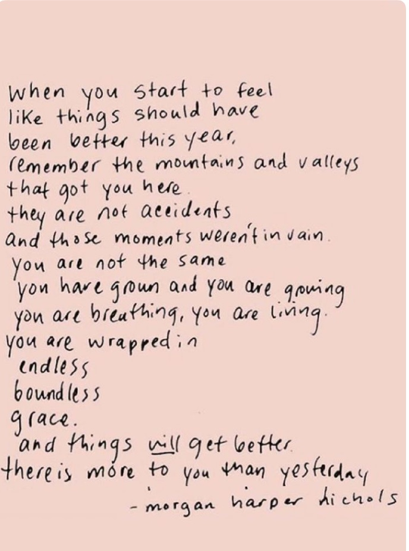

May 2018
Why fascism is so tempting and how your data could power it?
A healthy economy should be designed to thrive, not grow

March 2018
Hay momentos que te llenan el corazon. Asi dise mi papi. Y si, lo hay, hay momentos que te llenan el corazon. Para mi suelen llegar cuando escucho musica de TC. And how about we throw in some english because that's just what I do. I often think its incredibly hard to be a person here when you are so much of others parts.
February 2018
Zapateados are my ultimate favorite, no question. I've inherited the ear for them from the men in my life. Papa, grandfather. In regards to how they've become mainstream, being the picky, detail oriented person, well not super happy at how they're becoming a sort of fetish. There is a grace and flow that should come when dancing zapateados calentanos. One's feet should never really touch the floor. Using your teepy toes to move to the flow of the drums. Using the hands to caress the air as you turn and move with your partner. This is my two cents on zapateados. Here are some pretty ethinc true zapateados from tierra caliente:
El Gusto Federal
El Huizache
Las Zirandas
Conchita del Mar
El Tecolotito
La Oreja de Van Gogh makes a reappearance. Peaceful and reflectful.